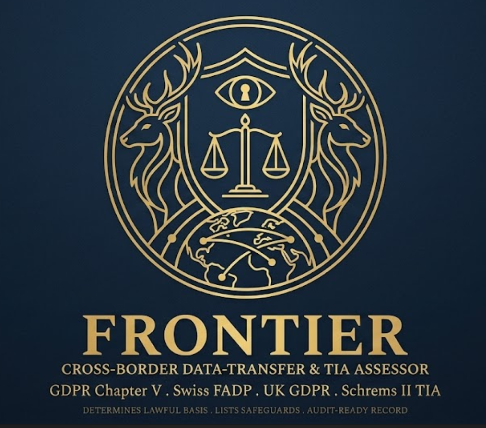

Personal DATA only — not money, goods or property. Frontier assesses whether moving personal data across a border is lawful under GDPR Chapter V / Swiss FADP / UK GDPR. It does not cover moving money, goods, property or physical assets — but it does cover personal data in any form, including paper files, ID documents and devices physically carried across a border.
Frontier determines the lawful basis for an international personal-data transfer — electronic or physical — runs a Schrems II-style Transfer Impact Assessment on the destination, lists the supplementary safeguards you need, and produces an audit-ready control record you can export. It reasons across the regimes a Geneva team actually straddles — EU GDPR, the Swiss FADP and the UK GDPR.
Decision-support, not legal advice. Adequacy lists, the EU/Swiss/UK-US Data Privacy Framework and CJEU case law change — the encoded position is dated July 2026 and must be re-checked against the current European Commission, FDPIC and ICO sources before you rely on it. Country risk ratings are reasoned assessment, not legal fact, and are labelled as such.